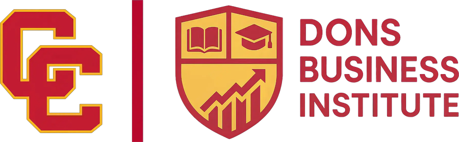
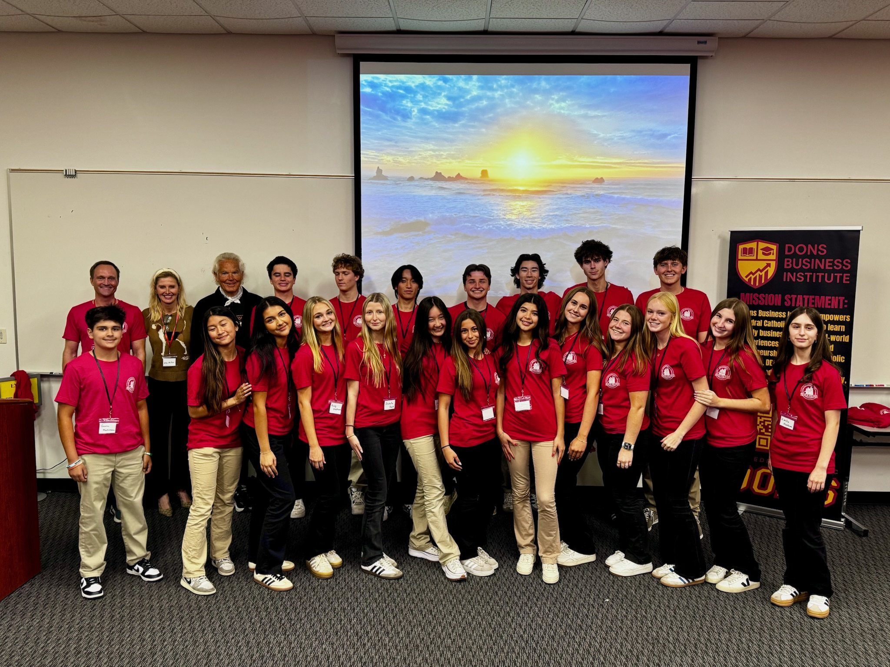

Teach a session
Forty minutes, eight slides max, no slide-reading — you teach from what you actually do, and students apply it the same afternoon. Our speakers have included founders, fund partners, a dean, and the CEO of Soapy Joe’s.

The door
We’re not going to pretend otherwise — most people who apply don’t get in. But we think the reason students talk themselves out of applying is that they picture the wrong thing. They picture a test.
It isn’t a test. Selection weighs curiosity, follow-through, communication, coachability and teamwork — not whether you already know anything about business, and explicitly not who your family knows. The whole point is to hand students the kind of access that usually only arrives through a family network or a paid programme.
I was expecting it to be a little awkward, because there were going to be a bunch of people I didn’t really know. But pretty quickly it became apparent that it was just one big community we were all trying to learn.

Cohort 2 · Intro to Business
Open to Cathedral Catholic students, freshmen through seniors. Apply online, and sixty students are invited back to interview. No business background required — that is the entire point.
“I’d tell a student thinking of applying that they should 100% go for it. It’s been one of my most fun activities here at Cathedral.”
Speakers, mentors and partners are welcome year-round. An hour of real experience goes further than a semester of theory.
For professionals & supporters
Every session is taught by working professionals, every venture team is coached by real operators, and every prize on the Summit stage was put there by a sponsor. Here is what an hour of your experience does.
Forty minutes, eight slides max, no slide-reading — you teach from what you actually do, and students apply it the same afternoon. Our speakers have included founders, fund partners, a dean, and the CEO of Soapy Joe’s.
Each spring, ten student companies are coached through a real build — problem, customer, prototype, pitch. Every team gets an entrepreneur mentor alongside a USD MBA. A few hours a month, February through May.
Bring a real problem from your company to the December Case Competition — Surfline did — or put your name behind the Summit, where over $20,000 in prizes puts real hardware in the hands of student founders.
Speakers, mentors and partners are welcome year-round.
Where to next